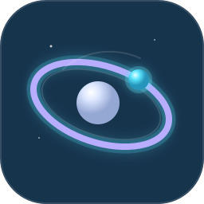
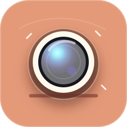
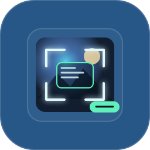

Measured spacing, explicit states and legible data.
DARK GLASS
BRAND GUIDELINES
2026
Dark GlassINTERFACE MATERIAL
Dark GlassBrand Guidelines02
Contents



OPTICAL INTERFACE MATTER / 2.3Dark GlassBrand idea03
I. BRAND IDEA
Engineered
Engineered
from light.
Dark Glass is an optical interface material for software that needs to feel precise, dimensional and unmistakably controlled.
It turns depth, blur, edge light and motion into a repeatable system. The atmosphere may feel advanced; the information must remain immediate.
Depth communicates role instead of decoration.
Motion settles softly and never delays access.
One optical logic across distinct products.
Dark GlassTonality04
Tonality
HOW WE COMMUNICATE
Quiet confidence,
Quiet confidence,
visible precision.
Dark Glass speaks directly and calmly. It describes the user’s result before the underlying technology. The language can be curious and ambitious, but never inflated, cryptic or theatrical.
TechnicalAtmospheric
CalmExpressive
PlayfulSerious
Concrete result, exact number, calm confirmation.
Vague, self-congratulatory and disconnected from the task.
MATERIAL
MARK
Dark GlassMark / Clear space06
Mark / Clear space
A / 3
A / 3
A / 3
A / 3
DARK GLASSINTERFACE MATERIAL
Minimum clear space equals one third of the mark height. Nothing may enter this field: no text, border, photograph, icon or pointer effect.
Dark GlassMark / Variants07
Mark / Variants
DARK GLASS
DARK GLASS
One prism.
Two lockups.
The prism is the material shorthand. The horizontal lockup is preferred in documentation and product headers; use the isolated prism when space is constrained or the name is already visible.
Always preserve the geometry and internal edge hierarchy.
Dark GlassMark / Use08
Mark / Do & don’t
SECOND
MARK
MARK
ICONS &
ELEMENTS
Dark GlassIcons & elements10
Icons & elements
PRODUCT OBJECTS
Product icons are crafted objects with real depth, a controlled light source and one ownable accent. They may differ in color and form while sharing rounded geometry and Obsidian shadow.
INTERFACE GLYPHS
Navigation icons behave like a companion typeface: 24px grid, 1.7px optical stroke, square terminals and exact 45° arrowheads. Filled pictograms are reserved for status and product objects.
COLORS
Dark GlassBrand modes12
Three modes
Aurora is the primary signature. Obsidian removes every nonessential color. Lux adds warm, crafted tactility.
The component geometry, typography and motion remain identical in all three.
Dark GlassProduct palettes13
Product palettes
Each product owns one dominant accent while preserving Obsidian, signal white and the shared material depths.
TYPOGRAPHY
Dark GlassTypography / Display15
Typography / Display
Space Grotesk
Display typography carries the engineered personality: geometric, compact and highly legible. Use 600 for most headings and 700 only for cover statements.
Measure the
impossible.Aa
impossible.Aa
SPACE GROTESK / 600ABCDEFGHIJKLMNOPQRSTUVWXYZ
abcdefghijklmnopqrstuvwxyz
1234567890
abcdefghijklmnopqrstuvwxyz
1234567890
Dark GlassTypography / Body & data16
Typography / Body & data
Inter
Body copy, navigation, labels and control text. It stays neutral enough for every product skin.
INTER / 400 · 500 · 600ABCDEFGHIJKLMNOPQRSTUVWXYZ
abcdefghijklmnopqrstuvwxyz
1234567890
abcdefghijklmnopqrstuvwxyz
1234567890
Clear enough for instructions. Calm enough for long sessions.
JetBrains Mono
Measurements, metadata, code, shortcuts and system status. Never use it for long paragraphs.
JETBRAINS MONO / 400 · 500ORBITAL_PHASE +0.042 RAD
FRAME_COUNT 00128
STATUS STABLE
FRAME_COUNT 00128
STATUS STABLE
10–12px · uppercase metadata · tabular rhythm
OPTIONAL DISPLAY VOICES
One system, three orbital tones.
Use one alternative per campaign or product moment. Interface text always stays Inter; data always stays JetBrains Mono.
Technical, human and highly usable. The safe public-web choice for dashboards, spatial tools and medium-scale display text.
PRIMARY ALTERNATIVE · 500–700Sharp, cinematic signature type for rare launch moments and ProfessorEngineer campaign lockups—not controls.
CAMPAIGN ONLY · REGULARThe mission-note voice already installed on this workstation. Use for sparse orbital annotations, never dense product copy.
MISSION ACCENT · REGULARMATERIAL
& MOTION
Dark GlassMaterial depths18
Material depths
Blur is hierarchy, not atmosphere. Use the lowest depth that still communicates the surface’s role.
Never show more than three depths in one viewport.
RADIUS8 · 12 · 18 · 28 · pillBORDER1px / 10–18% whiteSHADOWBlack only / 24–48%
Dark GlassInteraction19
Interaction
MOVE POINTERLight follows intent.
Only the nearest edge brightens. The whole surface must never glow uniformly.
Instant
Pointer and press acknowledgment.
Control
Buttons, toggles and focus.
Shift
Menus and inspectors.
Reveal
Section-level transition.
Atmosphere
Ambient motion only.
cubic-bezier(.2, .8, .2, 1)
DIMENSIONALITY LADDER
Depth, one optical cue at a time.
The silhouette never moves. Dimensionality grows through material density, directional edge light and balanced inset shading—not hover lift.
Fill + border. Calm and functional.
A bright top edge establishes one light source.
Side highlights and a dark lower seam define volume.
Pointer light joins the perimeter without moving the control.
EXPRESSIVE
SHAPES
Dark GlassExpressive shapes / Atlas21
Shape atlas
Dark Glass reconstructs a restrained subset of Google’s published RoundedPolygon recipes as reusable SVG geometry.
These shapes frame icons and moments—not paragraphs, inputs or ordinary text buttons.
Square
Stable icon containers and compact tools. The default expressive anchor.
Arch
Entrances, feature frames and content that opens into a larger space.
Diamond
Directional tools, spatial nodes and decisive icon-only actions.
Cookie 4
Selected creative tools and short-lived expressive states.
Soft burst
Celebration, generation and high-energy status—never routine navigation.
Dark GlassExpressive shapes / Use22
Core first
Most of the interface uses calm, repeatable geometry. Expressive shapes appear only where recognition matters.
Motion adds energy to intent; it must never deform a text label.
Buttons, fields, cards, menus and data surfaces stay legible, symmetric and predictable.
Use the atlas for large icon actions, feature moments and persistent selected states.
COMPONENTS
& APPLICATIONS
Dark GlassCore components24
Core components
BUTTON HIERARCHY
Rule: one primary action per decision area. Use sentence case and begin with a verb.
MENU & INPUT
FEEDBACK
Calibration availableReference frame A-17 can improve the result.
Export complete128 frames were written without errors.
Model inference74%
94 / 128 frames · ETA 00:18Dark GlassExpressive components25
Liquid controls
One floating control plane bends light above the content. Pointer proximity brightens only the nearest edge.
Shape morphing is reserved for intent, selection and commitment.
FIELD / OPTICAL RESPONSELight follows
intent.
intent.
Move through the material. The nearest edge catches light while content remains still.
01One liquid plane02Edge follows pointer03Shape confirms state04Content stays still
Dark GlassProduct applications26
Product applications
Every product owns an object, accent and purpose. Dark Glass supplies the shared geometry, typography and interaction physics.
Family resemblance without uniformity.
ORBITAL AMBIENCE
Caelum
Quiet cosmic depth, luminous orbit geometry and low-density controls.
VISUAL ENGINEERING
Looksmith
Warm optical craft, tactile controls and precise visual inspection.
DATASET TOOLING
OpenImageLabeler
Technical blue, dense annotation and validation-oriented feedback.
Dark GlassAgent handoff / Embedded recipes27
Build with it
These recipes encode the interaction law directly: no lift, a local edge lens, stable typography and one liquid plane.
Give this page plus AGENT_BRAND_BRIEF.md to a model or collaborator for an implementation-ready handoff.
<button class="dg-button dg-button--primary dg-glow"
type="button" data-glow>
Calibrate field
</button>
/* Hover changes light and shadow only.
Never translate the control. */<label class="navigation-field">
<span aria-hidden="true">
<svg class="dg-arrow-icon" viewBox="0 0 24 24">
<use href="#glyph-enter"/>
</svg>
</span>
<input aria-label="Search" placeholder="Search the signal field">
<kbd>⌘K</kbd>
</label>brand: Dark Glass 2.3
defaultTheme: aurora
themes: [aurora, obsidian, lux]
fonts:
display: Space Grotesk
body: Inter
data: JetBrains Mono
interaction:
hoverLift: 0px
hoverScale: 1
pointerLight: local-edge-only
icons:
system: dark-glass-arrow-font
glyphs: 32
unicodeArrows: forbidden
material:
glassLevels: [quiet, base, raised, focus]
maxDepthsPerViewport: 3
rules:
- content-never-moves-on-hover
- one-liquid-plane-per-composition
- white-is-signal-not-background<label class="wave-slider" data-wave-slider data-segments="30">
<span><b>Orbital gain</b><output>64%</output></span>
<span class="wave-slider__rail" data-wave-rail aria-hidden="true"></span>
<input type="range" min="0" max="100" value="64">
</label>SYSTEM
READY.
One optical language.
Distinct products.
Dark GlassINTERFACE MATERIAL / 2.3